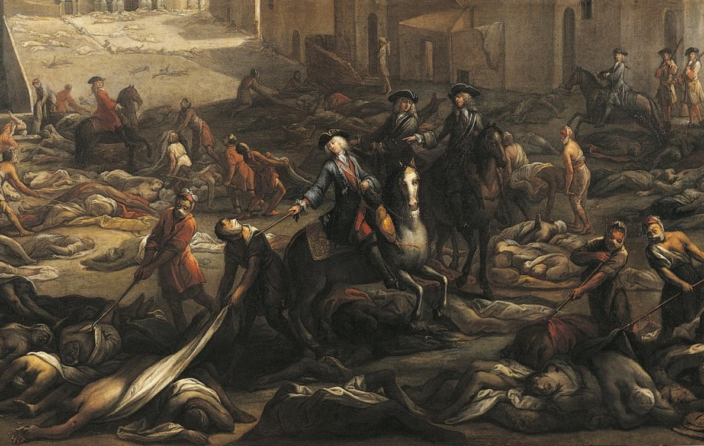
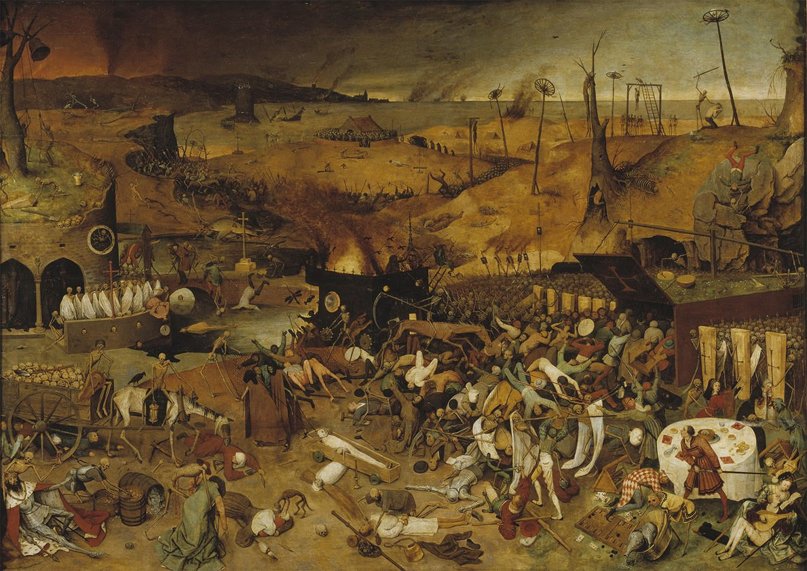

Great Plague of London, epidemic of plague that ravaged London, England, from 1665 to 1666. The outbreak was caused by Yersinia pestis, the bacterium associated with other plague outbreaks before and since the Great Plague of London. Rats carried the fleas that caused the plague. They were attracted by city streets filled with rubbish and waste, especially in the poorest areas.
No stranger was allowed to enter a town unless they had a certificate of health.
No furniture was to be removed from an infected house.
There were to be no public gatherings such as funerals and all houses were to be kept clean.
No unwholesome foods were to be sold in shops or markets.
Swans, dogs, cats or tame pigeons were not allowed to move in town or from infected places.
Most of the sick in 1665-1666 had bubonic plague. This created swellings (buboes) in the lymph nodes found in the armpits, groin and neck. Plague sufferers experienced headaches, vomiting and fever. They had a 30% chance of dying within two weeks.
City records indicate that some 68,596 people died during the epidemic, though the actual number of deaths is suspected to have exceeded 100,000 out of a total population estimated at 460,000.
Around September of 1666, the great outbreak ended. The Great Fire of London, which happened on 2-6 September 1666, may have helped end the outbreak by killing many of the rats and fleas who were spreading the plague.